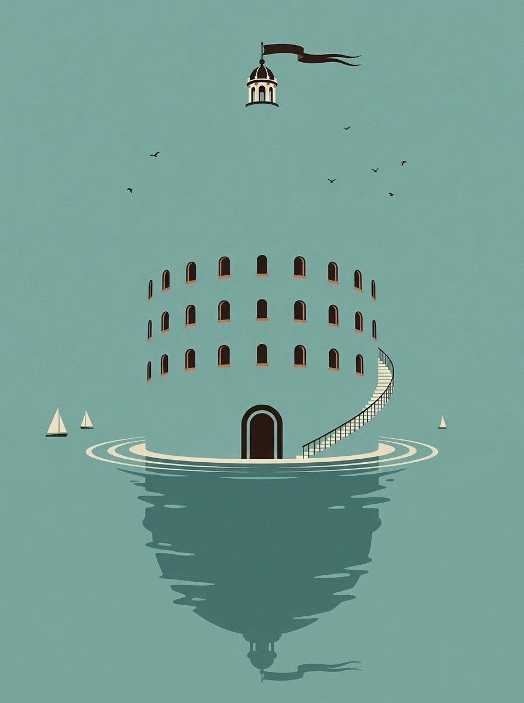

墙面色彩已同步至作品实测纸色，海报边界与空间自然融为一体（点击图像可放大细看）

墙面色彩已同步至作品实测纸色，海报边界与空间自然融为一体（点击图像可放大细看）
四幅 3:4 复古平涂海报分别将 Syoyo「BLEND ART」从二维人物服饰，升维至四维拓扑几何、超现实纪念碑建筑、宇宙引力场与东方大象无形哲思。点击任意一幅切入上方同色沉浸墙面。
画面成功的秘诀从不是“画得更像 3D”，而是克制地只选 2–3 个高反差结构锚点，让观者的大脑亲手在纯色虚空中雕出宏大实体。
原画：领口、袖口、波浪裙摆
高维：穹顶天窗、拱形海门、孤峰水际线
原画：竖排纽扣、拉链、腰带
高维：随曲率透视收窄的拱窗列、悬空旋梯、天文刻度脊线
原画：波点裙、花卉刺绣、虚线明线
高维：隐形山体的古松与金缮裂纹、隐形星球的经纬点阵
原画：撑伞女孩侧后方的深棕投影
高维：隐形超立方体的焦茶几何长影、行星右下缘日蚀暗弧
原画：同色绿水中的变形倒影与黑猫
高维：静水之下映出整座隐形巴别塔穹顶或圣山剪影
原画：WIND / RIBBON 斜字被裙摆裁断
高维：星图坐标网、斜向标尺与巨字在隐形边界干净切空
原画：斜贴的黄色褶皱胶带、断桨
高维：紧裹隐形棱角的奶油折带、前穿后隐的双色行星环
原画：风吹反折伞骨、飞离的草帽
高维：迎风猎猎的高塔双旗、穿梭虚空的轨道环
原画：焦茶色厚底靴压住底部重心
高维：极微小的孤舟、盘旋飞鸟、七只游鹤，瞬间拉升百米/光年级体量
Flat 2D mid-century editorial art poster illustration in the Coles Phillips and Syoyo BLEND ART fadeaway negative-space figure-ground merge style, Wes Anderson dead-center symmetrical composition, uniform fine matte vintage gouache print paper grain texture across the entire canvas, 3:4 vertical aspect ratio. The entire background is a completely flat, solid, unshaded [主底色 + Hex]. Centered monumentally in the frame is a colossal invisible [高维主体，如 4D monolith / Babel citadel / gas giant / sacred peak] whose entire body and outer surfaces are 100% the EXACT SAME flat [主底色] as the background—with ZERO outer contour lines, ZERO silhouette edges, ZERO tonal brightness separation, and ZERO gradient shading. The hidden monumental form is revealed ONLY through three surgical visual anchors drawn strictly in deep burnt-tea espresso brown (#2A1713) and warm ivory cream (#F6ECD7): 1. [锚点 A：背景星图/网格遮断 或 水面完整倒影] 2. [锚点 B：随曲率排布的窗列/刻度/古松/行星环前穿后隐] 3. [锚点 C：焦茶色硬边投影 或 极微尺度孤舟/飞鸟] Strict vintage color discipline: strictly NO pure black (#000000), strictly NO pure white (#FFFFFF). NO closed outline around the subject, NO human figures, NO characters, NO 3D rendering, NO volumetric lighting, NO glowing neon, NO bloom, NO soft gradients, NO photorealism.